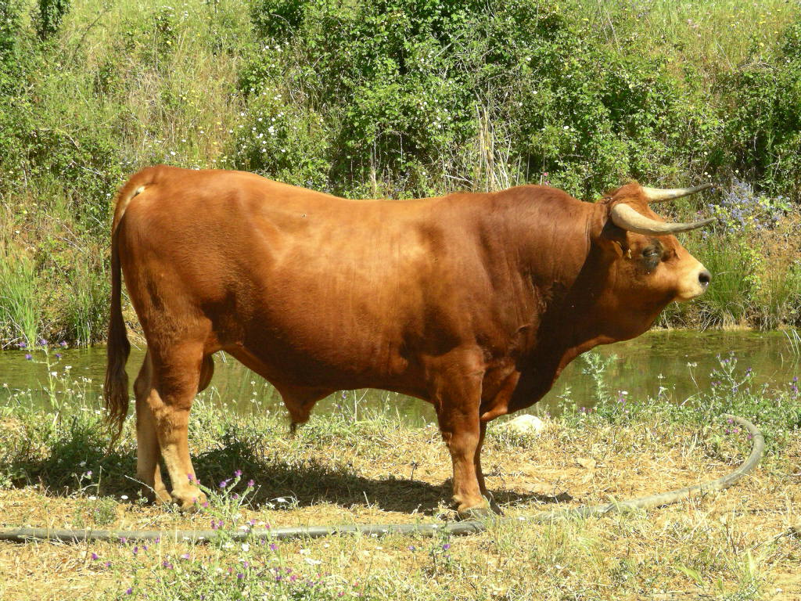

AROUQUESA
Weight:
880 to 1100 pounds
Height :
47 inch
51 inch
Length:
63 inch
71 inch
Color:
solid coat color of fawn or light brown
Longevity:
10 – 15 years.
Arouquesa personality
The Arouquesa cow is known for its docile and calm temperament, similar to other Portuguese cattle breeds. They typically exhibit a gentle and amiable disposition, making them well-suited for handling and management by farmers. This calm nature can make them easier to handle during tasks such as milking, veterinary procedures, and general husbandry.
Arouquesa cows are often raised in extensive grazing systems, where they have ample space to roam and graze on pastureland. Their adaptability to various environmental conditions and their ability to efficiently convert forage into meat make them valuable for sustainable agricultural practice
What to expect
1Hardiness: Arouquesa cows are known for their robust and hardy nature, well-adapted to the rugged and mountainous terrain of the Arouca region in Portugal where they originated. They are able to thrive in harsh environments with limited resources.
2.Adaptability: These cows are highly adaptable to various environmental conditions, including both hot summers and cold winters. Their ability to graze efficiently in mountainous areas makes them well-suited for extensive farming systems
3.Disease Resistance: Arouquesa cows have developed natural resistance to common diseases and parasites prevalent in their native environment, reducing the need for intensive veterinary care.
4.Dual-purpose: Arouquesa cows are considered a dual-purpose breed, meaning they are utilized for both milk and meat production. While their milk yield may not be as high as specialized dairy breeds, they produce quality milk rich in fat and protein, and their meat is highly regarded for its flavor and tenderness.
5.Gentle Temperament: Arouquesa cows are generally docile and calm in temperament, making them easier to handle and manage, particularly during milking or handling procedures.
History of the Arouquesa
The Arouquesa cow is a breed of cattle that originated in the Arouca region of Portugal, which is located in the northern part of the country. The history of the Arouquesa cow is deeply intertwined with the agricultural traditions and cultural heritage of this region.
The exact origins of the Arouquesa cow are not precisely documented, but it is believed to have ancient roots, dating back hundreds of years. These cows are thought to have descended from ancient Celtic and Iberian cattle breeds that have been present in the Iberian Peninsula for millennia.
Historically, the Arouquesa cow played a crucial role in the agricultural and economic life of the Arouca region. They were primarily used for their dual-purpose capabilities, providing both milk and meat for local farmers and communities. Their ability to thrive in the rugged and mountainous terrain of the region made them particularly well-suited for extensive farming systems.
Over time, as agricultural practices evolved and modern farming techniques became more prevalent, the population of Arouquesa cows declined. Like many traditional breeds, they faced competition from more specialized breeds and industrialized farming methods.